巡检调度系统是运行在现场电脑上的巡检操作台：它通过 certaintyX 云端接口指挥机器狗按路线巡检，到每个巡检点拍一张 360° 全景，交给视觉大模型（VLM）判断「是 / 不是」，再把结论用语音播报出来，全过程留档。
为什么要「分段下发」：机器狗走一条路径时中途不会停。所以系统把每个巡检点单独下发一段，机器人到点后才能停下来拍照判读，再下发下一段。
| 含义 | 来自 | |
|---|---|---|
| 导航航点 | 地图自带的点，编号 1、2、12…，带坐标和连通关系 | 机器人的地图（只读） |
| 任务航点 | 你定义的巡检点：落在某个导航航点上，并带有检查问题（prompt）、全景角度范围、答案模版、参考图 | 本系统 |
安装包里已经带好了程序运行需要的一切（固定版本的 Python 3.12 运行时、全部依赖、ffmpeg 抓图工具、中文字体），不需要另外安装 Python 或其他软件。程序由两部分组成：
127.0.0.1 上提供服务，局域网里的其他电脑访问不到。| 项目 | 要求 |
|---|---|
| 操作系统 | Windows 10 或 Windows 11，64 位（x64） |
| 磁盘空间 | 安装后约 700 MB；另外为巡检图片与数据库预留空间（每次检查约 0.1–0.2 MB 图片） |
| 权限 | 普通用户即可，不需要管理员权限 |
| 网络 | 接真机时要能访问云端地址（如 https://certaintyx.sg:8443）；在线语音合成（edge）、云端 VLM（如通义千问）也需要联网。只在仿真模式下试用可以不联网 |
| 抓图 | 真机抓全景走 RTSP（端口 8554）。若该端口被防火墙挡住，可改用 HLS（见 §6.2） |
只在仿真模式里试用时，以下都不需要。接真机前，请找管理员在云端管理界面的「API 接入」里拿到：
| 信息 | 示例 | 说明 |
|---|---|---|
| 云端地址 | https://certaintyx.sg:8443 | 由管理员提供 |
| 机器人别名 | ntu-dog-00001 | 填别名，不要填机器人 ID |
| API 密钥 | cx_xxxxxxxx_… | 角色为 operator、租约模式为 auto |
| VLM 密钥（可选） | sk-… | 使用通义千问等云端模型时需要（见 §7） |
PatrolScheduler-0.8.0-win-x64.exe（约 197 MB），双击运行。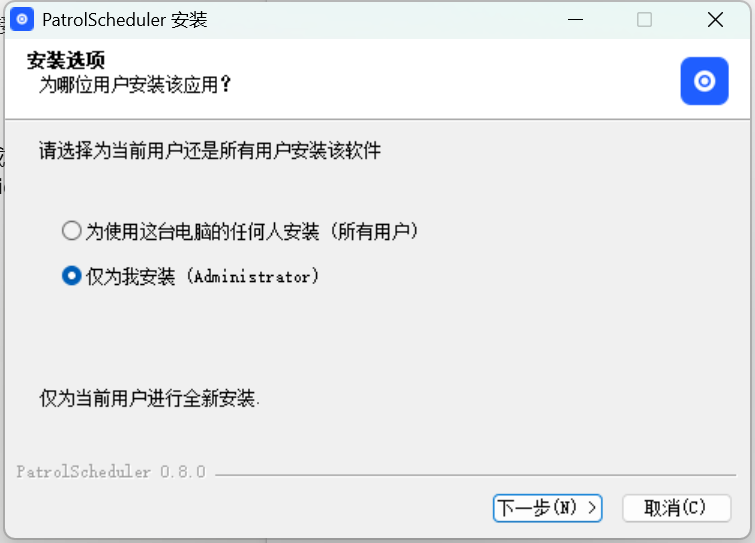
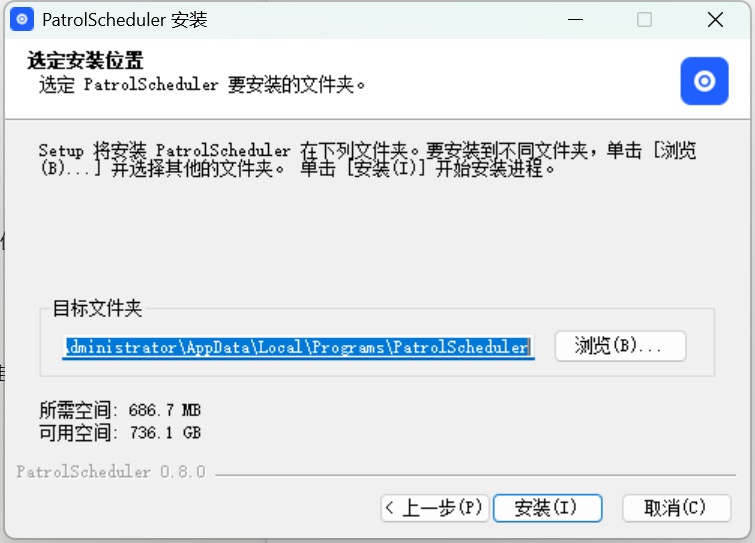
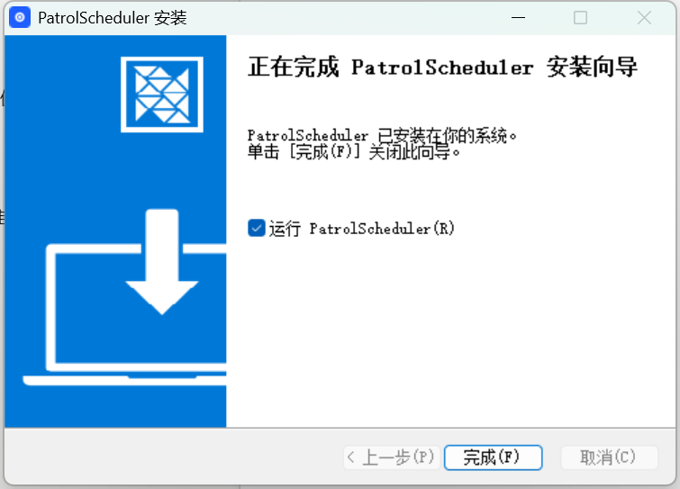
%LOCALAPPDATA%\Programs\PatrolScheduler第一次启动会弹出「第一次启动」提示框，窗口直接停在设置页，等你填写云端连接信息。点知道了关闭提示框。
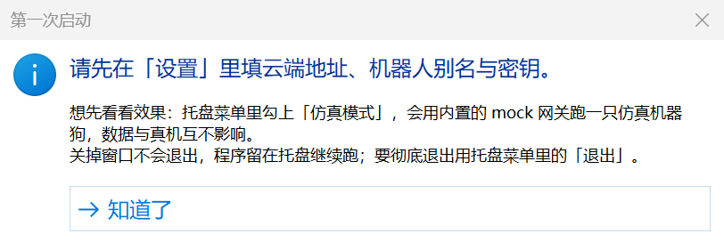
程序运行时，任务栏右下角的通知区域里有一个蓝色圆形图标。Windows 默认会把新图标收在「^」（显示隐藏的图标）里，点开就能看到。
点窗口右上角的 × 只是把窗口收进托盘，巡检与定时计划会继续执行。第一次这样做时右下角会弹出通知提醒你。要彻底退出，请用托盘菜单里的退出（会先停下机器人）（见 §9.2）。
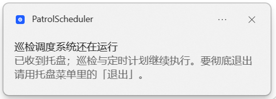
仿真模式会在本机启动一只「仿真机器狗」：不需要机器人、不需要密钥，不会让任何真实设备动起来。建议第一次使用时先在这里把整个流程走一遍。
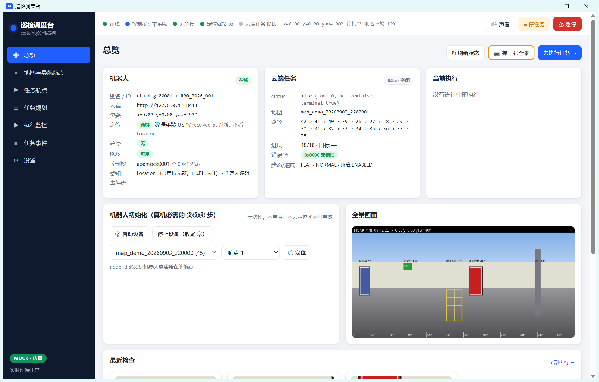
试完后，在托盘里取消勾选「仿真模式」即可回到真机模式；仿真里建的数据保留在仿真自己的数据目录里，下次勾选时还在。
rtsp。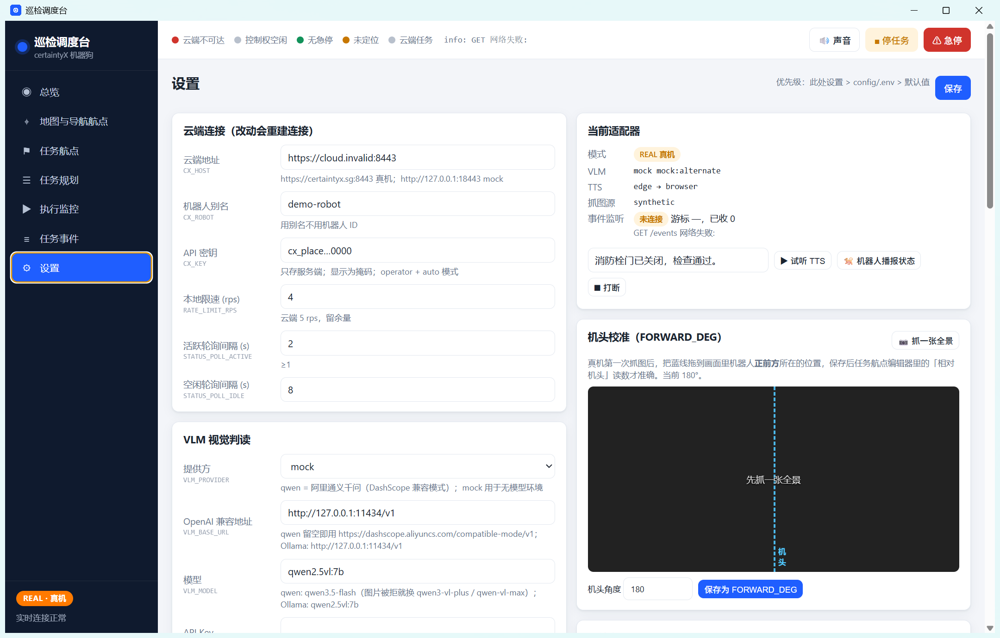
http://127.0.0.1:18443，左下角会显示「MOCK · 仿真」、顶栏显示「云端不可达」。填好真实地址并保存，几秒内就会变为 REAL · 真机。在总览页点↻ 刷新状态，系统会列出七项执行前置检查。七项全部通过才能执行任务：
| 检查项 | 不通过时怎么办 |
|---|---|
| 云端网关可达 | 检查网络、云端地址是否填对 |
| 机器人在线 | 确认机器人已开机并联网 |
| 无急停指令 | 点提示旁的「取消急停」 |
| ROS 可用 | 机器人端 ROS 未运行，读到的都是旧数据；联系机器人维护人员 |
| 定位就绪 | 按 §6.3 做「② 启动设备」与「④ 定位」 |
| 云端无进行中的任务 | 若提示中路径为空（通常是刚做过定位的残留），点「停任务」；若是别人下发的任务，等它结束 |
| 控制权可用 | 现场有人在操作机器人，等对方放手 |
抓图源：rtsp 是首选；若 8554 端口被防火墙挡住，改为 hls（抓帧更快但画面会落后 2–3 秒）。
在总览 → 机器人初始化里按顺序做一次（机器人不重启、不丢定位就不用重做）：
全景图上机器人正前方对应哪一列，需要标定一次，任务航点编辑器里「相对机头 ±N°」的读数才准：
| 提供方 | 用法 |
|---|---|
mock | 不调用模型，交替回答「是 / 不是」。用于打通流程或演示（默认值） |
qwen | 阿里通义千问（DashScope）。OpenAI 兼容地址留空即可；模型填 qwen3.5-flash（图片被拒时换 qwen3-vl-plus / qwen-vl-max）；API Key 填 DashScope 的 sk-… |
openai_compat | 任何 OpenAI 兼容服务：本机 Ollama（http://127.0.0.1:11434/v1，模型如 qwen2.5vl:7b）、vLLM、LM Studio、OpenAI |
anthropic | Anthropic 官方接口：填 Anthropic API Key 与模型名 |
填好后点保存，再到任务航点编辑器的「试问 VLM」里点用参考图验证（见 §8.2），这一步不会让机器人动。
「附整张全景」= 除了裁切图外再发一张带角度标注的整图，模型能看到更多上下文，但每次调用更贵。
引擎决定怎么把文字变成声音：edge = 微软在线合成，音色好，需要联网（默认）；none = 不合成，文字交给网页朗读或发给机器人本地离线合成；command = 调用命令行 TTS 程序（高级用法）。汇出决定在哪里播放，可以多选，用英文逗号分隔：
| 汇出 | 播放位置 |
|---|---|
robot | 机器狗自带的扬声器（推荐真机使用；需要机器人固件 2026-09-14 或更新） |
browser | 本程序窗口（也就是这台电脑的扬声器）。网页需先点一下顶栏「🔊 声音」解除自动播放限制 |
http | 项目自带的播报服务（旧固件没有播报接口时的替代方案，需要实施人员部署） |
webhook | 把播报内容 POST 到指定地址 |
robot,browser：机器狗现场播报，同时电脑上也能听到。edge：音色好，推不成时会自动退回文字由机器人自己念；如果调度电脑不能上外网，选 none，由机器人离线合成。设置页「当前适配器」卡片里可以输入一句话点▶ 试听 TTS，🐕 机器人播报状态可查看机器人端的声卡、队列与音量，⏹ 打断清空播报队列。
以下步骤在仿真模式与真机模式下完全一样。建议先在仿真里练熟。
左侧地图与导航航点 → 选择地图 → 同步。画布上会显示导航航点、连通关系与机器人的实时位置。检查两个数字：航点数是否正确；连通块是否为 1（大于 1 说明地图拓扑断开，跨块的路段会走不通）。
在画布上点某个导航航点，可以直接「添加为任务航点」「设为定位初值」或「设为路线起点 / 终点」。
左侧任务航点 → ＋ 新建任务航点（或在地图上点导航航点 →「添加为任务航点」）。编辑器右半边的全景角度编辑器是核心操作：
{name}（航点名）、{answer}（模型回答）占位，每句后面的 ▶ 可以试听。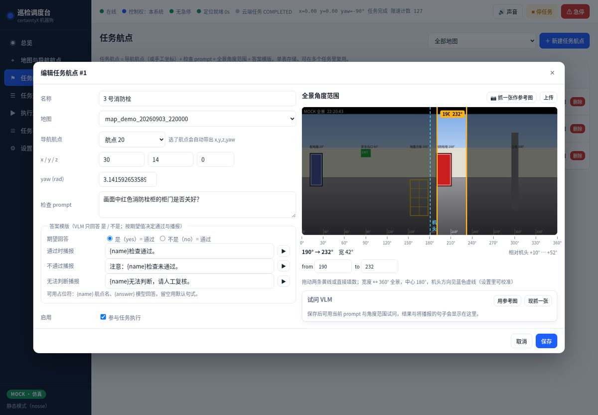
左侧任务规划 → ＋ 新建任务：选择地图、起始点，按顺序加入任务航点（上下箭头调整顺序）。
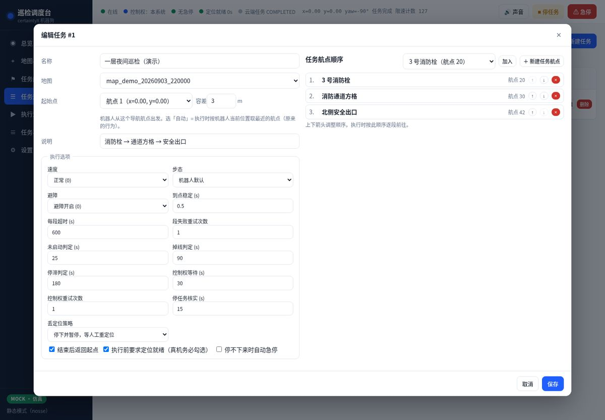
点▶ 执行：系统先做一次前置检查（不通过会直接列出原因），真机模式还会再确认一次。之后在执行监控里查看：
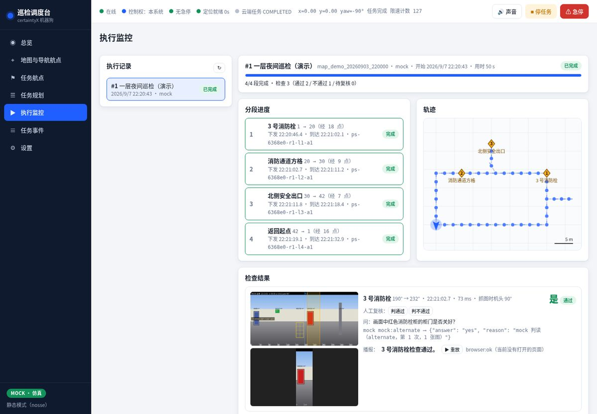
| 人工干预按钮 | 作用 |
|---|---|
| ⏸ 暂停 | 当前段走完后停下；点「▶ 继续」接着走 |
| ⏭ 跳过当前航点 | 停掉这一段，从当前位置重新规划下一段 |
| ■ 中止 | 停止任务，并把本次执行标记为已中止 |
执行失败或中止后，执行详情右上角会出现「↻ 从『某航点』重跑剩余航点」，只走没做完的部分。
任务规划 → ⏰ 定时：可设「每天固定时刻」（如 07:30,19:30）或「每 N 分钟」。到点时如已有执行在跑，会跳过并记一条事件；执行前照常做前置检查。定时计划只在程序运行时生效（窗口收进托盘也算运行），建议配合「开机自启」使用（§9.3）。
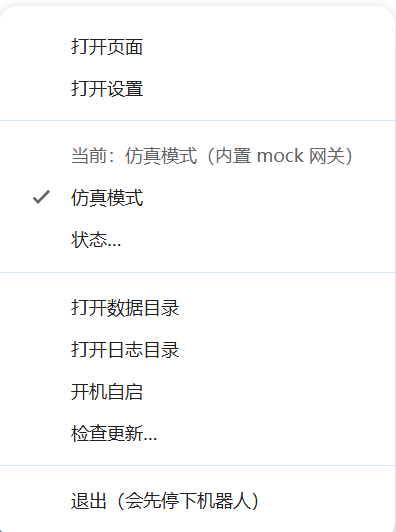
| 菜单项 | 作用 |
|---|---|
| 打开页面 | 打开主窗口 |
| 打开设置 | 打开窗口并直接进入设置页 |
| 当前：…模式 | 只显示当前是仿真还是真机 |
| 仿真模式 | 勾选 / 取消，在仿真与真机之间切换（约 5 秒）。若有巡检正在执行，会先询问是否中止 |
| 状态… | 显示模式、云端、版本、端口、后台线程、运行环境与数据目录 |
| 打开数据目录 | 用资源管理器打开当前模式的数据目录 |
| 打开日志目录 | 出问题时把这里的日志发给技术支持 |
| 开机自启 | 勾选后登录 Windows 时自动启动 |
| 检查更新… | 手动检查新版本（§10.1） |
| 退出（会先停下机器人） | 彻底退出（§9.2） |
右键托盘图标 → 退出（会先停下机器人）：
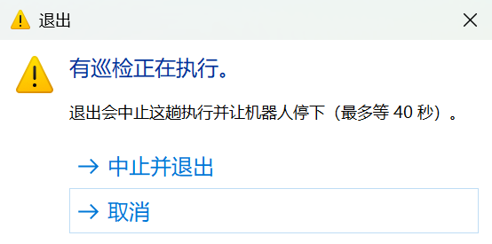
托盘菜单勾选开机自启后，每次登录 Windows 都会自动启动，并沿用上次的模式（仿真 / 真机）。需要定时巡检的电脑建议打开。取消勾选即关闭。
托盘状态…，或设置页下方的「系统自检」，可以看到版本、数据库、后台线程、媒体占用和「运行环境」。正常应显示：
Python 3.12.13 · 自带运行时 runtime · ffmpeg 有 · 中文字体 NotoSansCJKsc-Regular · win32
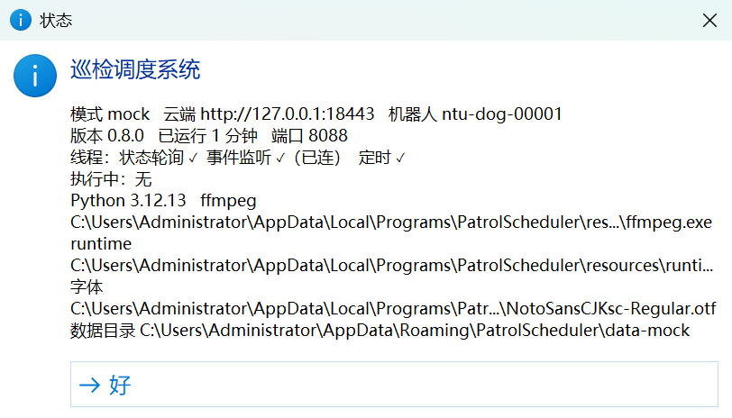
所有数据保存在 %APPDATA%\PatrolScheduler\ 下（在资源管理器地址栏输入这串路径即可打开）：
| 位置 | 内容 |
|---|---|
data\ | 真机模式的数据库（scheduler.db）、巡检图片（media\）、后台日志（logs\app.log） |
data-mock\ | 仿真模式的数据，结构同上 |
logs\ | 窗口与后台服务的启动日志：desktop.log、backend.out、mock.out |
desktop.json | 记住上次是否为仿真模式 |
data 文件夹（程序运行时直接复制数据库可能得到不完整的副本）。data\media\runs\ 下较早的编号目录（只影响历史记录里那几次执行的图片显示）。%APPDATA%\PatrolScheduler\ 里的数据与设置，重新安装后数据仍在。要彻底清除，卸载后手动删除该文件夹。| 现象 | 处理 |
|---|---|
| 安装时出现「Windows 已保护你的电脑」 | 点「更多信息」→「仍要运行」。安装包未签名所致 |
| 找不到托盘图标 | 点任务栏右下角的「^」（显示隐藏的图标）。可按 §4.1 让它常驻任务栏 |
| 点了「退出」好像没反应 | 有巡检在执行时会弹确认框，它可能被其他窗口挡住：鼠标移到任务栏上的 PatrolScheduler 图标，在缩略图里点「退出」 |
| 真机模式下左下角显示 MOCK、顶栏「云端不可达」 | 还没填写云端地址：按 §6.1 在真机模式下填写并保存，几秒后左下角变为 REAL · 真机。若托盘里还勾着「仿真模式」，说明配置填进了仿真模式：先取消勾选，再在真机模式下重新填写（见第 6 章开头） |
| 顶栏「离线」 | 机器人没开机、没联网，或云端地址 / 别名 / 密钥填错 |
| 任务下发成功，但机器人不动 | 依次检查：是否漏了「② 启动设备」、是否漏了「④ 定位」、急停是否还在生效、路径是否属于另一张地图 |
| 前置检查：云端有任务在跑 | 路径为空 → 刚做过定位的残留，点「停任务」；有正常路径且不是你下发的 → 现场有人在操作，等它结束 |
| 操作返回 409 / 控制权被别人持有 | 现场有人在控制机器人，等对方放手 |
| 中止 / 停任务后机器人还在走 | 机器人端偶发不响应停止指令，系统会记一条红色事件。使用急停或到现场处理 |
| 抓不到全景或抓帧很慢 | 真机 RTSP 抓一帧约 3 秒。8554 端口被挡时把抓图源改为 hls |
| 全景是一条条竖条纹 | 抓到了还没稳定的画面，系统会自动重抓，仍不合格会跳过判读并记 snapshot_degraded 事件 |
| 全景上的中文是方块 | 看「运行环境」是否显示「中文字体 NotoSansCJKsc-Regular」；不是的话重新安装 |
| 电脑上听不到播报 | 确认汇出里有 browser、电脑没静音、顶栏「🔊 声音」已打开；edge 引擎需要联网 |
| 程序启动失败：「后端 60 秒没起来」 | 托盘或报错框里的日志目录，看 backend.out；常见原因是数据目录不可写或杀毒软件拦截 |
| 端口 8088 被占用 | 程序会自动换下一个端口，托盘「状态…」里可看到实际端口 |
| 杀毒软件删除了程序文件 | 把安装目录加入杀毒软件的排除项后重新安装 |
| 退出时卡了很久 | 后台在等机器人确认停下（最多 40 秒），通常是云端不响应。超时后程序会强制结束 |
联系技术支持时请提供：托盘「状态…」的截图，以及日志目录里的 desktop.log、backend.out 和数据目录里的 logs\app.log。
| 设置项 | 默认值 | 说明 |
|---|---|---|
| 云端连接 | ||
| 云端地址 | （占位） | 真机填管理员提供的地址，如 https://certaintyx.sg:8443 |
| 机器人别名 | （占位） | 填别名，不要填机器人 ID |
| API 密钥 | （占位） | 只保存在本机，显示为掩码；不改就原样保存 |
| 本地限速 (rps) | 4 | 云端限 5 次/秒，留余量，一般不用改 |
| VLM 视觉判读 | ||
| 提供方 | mock | mock / qwen / openai_compat / anthropic（§7.1） |
| 模型 | qwen2.5vl:7b | 按提供方填写 |
| 超时 (s) | 120 | 模型响应慢时可加大 |
| TTS 播报 | ||
| 引擎 | edge | edge / none / command（§7.2） |
| edge 声音 | zh-CN-XiaoxiaoNeural | 也可用 zh-CN-YunxiNeural 等 |
| 汇出 | browser | 真机推荐 robot,browser |
| 机器人音量 | （空） | 0–100；留空表示沿用机器人上次的音量 |
| 播完再继续 | 0 | 1 = 等机器人念完再走下一段 |
| 抓图与执行 | ||
| 抓图源 | synthetic | 真机改为 rtsp；8554 被挡用 hls |
| 常驻读流 | 1 | 到点抓帧更快更稳，保持开启 |
| 机头对应角度 (°) | 180 | 通过「机头校准」设置（§6.4） |
| 到点稳定 (s) | 2 | 机器人到点后等待多久再抓图 |
| 每段超时 (s) | 600 | 按最长一段实际用时的 2 倍设置 |
| 通知 Webhook | （空） | 检查不通过或执行失败时把 JSON 推送到这个地址（如企业 IM 机器人） |
| 内容 | 位置 |
|---|---|
| 程序文件 | %LOCALAPPDATA%\Programs\PatrolScheduler\ |
| 数据与设置 | %APPDATA%\PatrolScheduler\（详见 §9.5） |
| 真机数据库 | %APPDATA%\PatrolScheduler\data\scheduler.db |
| 仿真数据库 | %APPDATA%\PatrolScheduler\data-mock\scheduler.db |
| 巡检图片 | …\data\media\runs\<执行编号>\ |
| 启动日志 | %APPDATA%\PatrolScheduler\logs\ |
| 后台运行日志 | …\data\logs\app.log（仿真为 data-mock\logs\app.log） |
| 开机自启登记 | 注册表 HKCU\Software\Microsoft\Windows\CurrentVersion\Run 下的 cn.patrolscheduler.desktop |
| 网页地址 | 默认 http://127.0.0.1:8088（被占用时自动顺延，见托盘「状态…」）。同一台电脑上用浏览器打开也能操作 |
在仿真模式运行时，打开 PowerShell 执行下面两行，会同步演示地图、建 3 个任务航点和 1 个任务，并跑一趟（约 40 秒）：
$R = "$env:LOCALAPPDATA\Programs\PatrolScheduler\resources" & (Get-ChildItem "$R\runtime\python\*\python.exe" | Select-Object -First 1).FullName "$R\backend\scripts\seed_demo.py" --base http://127.0.0.1:8088 --reset --init --run --mock-speed 6
若端口不是 8088，把 --base 里的端口换成托盘「状态…」里显示的端口。
三个平台的安装包里是同一份运行时与程序，界面与操作完全相同，只有安装方式和数据位置不同：
| 平台 | 安装 | 数据与日志 |
|---|---|---|
| macOS | 打开 PatrolScheduler-x.y.z-mac-arm64.dmg（Apple 芯片）或 -mac-x64.dmg（Intel），把图标拖进「应用程序」。未签名的包第一次打开会被拦：系统设置 → 隐私与安全性 → 仍要打开 | ~/Library/Application Support/PatrolScheduler/ |
| Linux | 给 PatrolScheduler-x.y.z-linux-x64.AppImage 加可执行权限后双击；或安装 deb 包。AppImage 双击没反应时安装 libfuse2 | ~/.config/PatrolScheduler/ |
— 完 —